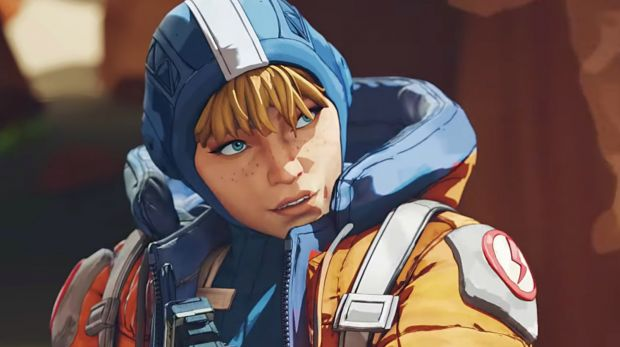

Habilidad táctica | Garfio: Es el elemento que le permite subir a las alturas. Se dispara y te lleva hacia el objetivo… siempre que haya quedado bien asegurado.
Habilidad pasiva | Radar: Analiza los acontecimientos para anticiparse al siguiente movimiento. Hackea balizas y es capaz de tomar decisiones antes que nadie..
Habilidad definitiva | Tirolina: De lo más útil. ¿Hay que cruzar un desnivel pronunciado? Nada como lanzar una cuerda creando una tirolina por la que todo el equipo puede transitar.
Bloodhound – Rastreadora tecnológica
Habilidad táctica | Ojo Omnisciente: Muy útil, sobre todo al principio, ya que muestra tanto pistas como trampas o movimientos enemigos. De forma temporal, eso sí.
Habilidad pasiva | Rastreadora: Al principio puede parecer que no sirve, pero conforme avanza la aventura, descubrir rastros del enemigo es de lo más efectivo.
Habilidad definitiva | Bestia Cazadora: Otorga un extra de velocidad a la hora de moverse y marca a los enemigos en rojo, ¿hace falta que os digamos que es una auténtica pasada?
Wraith – Hostigadora interdimensional
Habilidad táctica | En el vacío: Desaparece de la vista y no se le puede hacer ningún daño durante un tiempo limitado. Eso sí, si se mueve dejará un rastro, ¡así que cuidado!
Habilidad pasiva | Voces del vacío: Con ellas, Wraith oye voces que la avisan de posibles peligros. Esta información puede compartirse con el resto del equipo.
Habilidad definitiva | Brecha dimensional: En vez de tirolina, nuestra hostigadora abre un portal interdimensional. Puede usarlo todo el equipo, pero permanece abierto únicamente durante un minuto.
Bangalore – Soldado profesional
Habilidad táctica | Lanzahumo: Muy útil para despistar a los oponentes. Sirve para lanzar granadas de humo que dificulten la visión y proporcionen cobertura al equipo.
Habilidad pasiva | Paso ligero: Al igual que ocurría con Bloodhound, le permite apretar aún más el paso cuando es dañada o disparan con intención de hacerlo.
Habilidad definitiva | Retumbar del trueno: La clásica y peliculera marca para que el ataque aéreo sepa dónde tiene que lanzar sus misiles. Una verdadera pasada.
Lifeline – Médica de combate
Habilidad táctica | Dron médico DOC: Devuelve los niveles de vida de los compañeros cercanos a niveles más óptimos. Lo hace automáticamente.
Habilidad pasiva | Recuperación de combate: Le permite revivir más rápido a los compañeros mientras ella se protege bajo un escudo y acelera el uso de los distintos objetos curativos, tardan menos en poder utilizarse.
Habilidad definitiva | Pack de supervivencia: Parecida al ‘retumbar del trueno’ de Bangalore, solo que en vez de misiles del cielo, lo que cae son medicinas y equipos de protección.
Gibraltar – Fortaleza escudada
Habilidad táctica | Cúpula de protección: Durante 15 segundos, un campo de fuerza con forma de media esfera le protege ante cualquier tipo de ataque.
Habilidad pasiva | Escudo de arma: Le protege del fuego enemigo mientras apunta con su propia arma.
Habilidad definitiva | Bombardeo defensivo: También parecido a la habilidad definitiva de Bangalore, solo que en vez de misiles, la marca genera fuego de mortero.
Wattson – Defensora estática
Habilidad táctica | Perímetro de seguridad: Coloca unos postes que actúan como barrera electrificada, ¡bastante eficiente para mantener alejados a los malos!
Habilidad pasiva | Chispa de genialidad: Consigue que no se electrocute y, además, facilita el desarrollo de la siguiente habilidad.
Habilidad definitiva | Torre interceptora: Una mole que, además de destruir cualquier explosivo del oponente, le regenera escudo corporal a ella.

Mirage – Pícaro holográfico
Habilidad táctica | Desquiciar: Distrae a los enemigos con un holograma de sí mismo.
Habilidad pasiva | Ahora me ves: Al morir, lanza un camuflaje personal durante unos segundos.
Habilidad definitiva | Alma de la fiesta: Un poco de todo. Genera varios cebos holográficos mientras el verdadero Mirage se camufla.
Octane – Acróbata veloz
Habilidad táctica | Adrenalina: Cambia salud por velocidad, pero muy atentos, ¡que los muertos no corren!
Habilidad pasiva | Reparación rápida: Suma 2 unidades de vida por segundo que permanezca activa.
Habilidad definitiva | Plataforma de salto: La despliega para usarla él o cualquier otro miembro de su equipo.
Caustic – Trampero tóxico
Habilidad táctica | Trampa de gas Nox: Gas verde tóxico que se activa al dispararlo o cuando un enemigo pasa cerca de ella.
Habilidad pasiva | Visión Nox: Hace que el gas de su trampa no le afecte y que, además, pueda ver a través de él, ventaja táctica que no tienen sus oponentes.
Habilidad definitiva | Granadas de gas Nox: Como la trampa de su habilidad táctica, pero a la desesperada. La lanza rápidamente y se activa al momento.
Crypto – Experto en vigilancia
Habilidad táctica | Dron de vigilancia: Despliega un dron con cámara que echa a volar descubriendo a todo enemigo que quede debajo. Eso sí, atención, porque solo tiene un alcance de 200 metros y puede ser derribado.
Habilidad pasiva | Neuroenlace: Conecta tanto a Crypto como a sus compañeros al dron de vigilancia para que todos ellos puedan conocer la ubicación de los enemigos.
Habilidad definitiva | PEM de dron: Con el dron sobrevolando el mapa, genera una explosión que daña a los enemigos con entre un 75/50 de daño.
Revenant – Pesadilla sintética
Habilidad táctica | Silencio: Lanza un aparato que daña a los rivales y les mantiene inmóviles durante 10 eternos segundos.
Habilidad pasiva | Hostigador: Aumenta su velocidad, pero únicamente si camina agachado. Por si fuera poco, también hace que escale más alto que nadie.
Habilidad definitiva | Tótem de la muerte: Sitúa un tótem en el mapa que, mientras permanezca activo, hace que la leyenda nunca muera. Cada vez que sea eliminado del juego, reaparecerá en ese punto concreto.
Loba – Ladrona de alta sociedad
Habilidad táctica | Truco de ladrona: Lanza una pulsera que le permite teletransportarse. Solo puede utilizarla ella.
Habilidad pasiva | Ojo para la calidad: Como buena ladrona, echa un vistazo experto y es capaz de detectar equipamiento tanto épico como superior.
Habilidad definitiva | Tienda del mercado negro: Loba se las sabe todas, así que con esta habilidad abre un puestecito que le permite tomar los dos objetos que prefiera, ¡me lo quitan de las manos!
Rampart – Tuneadora rápida e ingeniosa
Habilidad táctica | Cobertura ampliada: Despliega un muro de cobertura ampliada completa que bloquea el fuego exterior y potencia los disparos desde su interior.
Habilidad pasiva | Cargador modificado: Capacidad de cargador ampliada y recarga más rápida al usar ametralladoras ligeras y la minigun.
Habilidad definitiva | Minigun de cargador Sheila: Coloca una ametralladora montada que cualquiera puede usar. Alta capacidad de munición y tiempo de recarga lento.
Fuse – Grandioso experto en explosivos
Habilidad táctica | Bomba de racimo: Lanza una bomba que, al estallar, desprende aún más explosivos que van estallando por el aire, ¡un arma de destrucción total!
Habilidad pasiva | Granadero: Como experto en explosivos, esta habilidad no solo permite a Fuse cargar más explosivos de lo normal. Además, gracias a ella, los lanza más lejos, ¡y con mayor velocidad y precisión!
Habilidad definitiva | Petardazo: ¿Te imaginas marcar una zona y que sea rodeada ipso facto por un muro de llamas? Pues deja de imaginártelo, ¡Fuse lo hará realidad por ti!